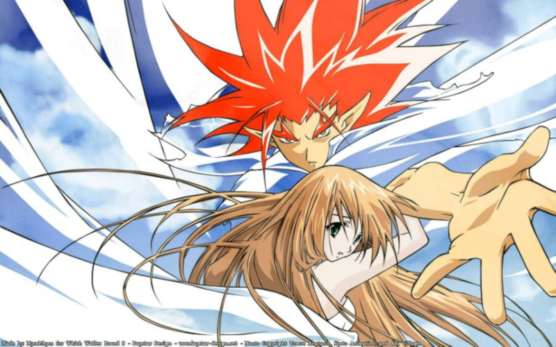

munto

交配类型：神与人
《MUNTO》系列是京都动画制作的原创动画系列作品。以2003年推出的OVA《MUNTO》为起点，2005年推出另一部OVA《MUNTO～穿越时空之壁》后。2009年春推出电视动画《仰望天空的少女瞳中的世界》[1]，在电视播放时进行调整，第一话至第六话前半沿用重新编辑的OVA旧作画面，再加上部分新绘制画面组合而成；而后半开始则是新的故事。声优和前两作不尽相同，音乐和主题曲亦重新制作。2009年3月11日宣布推出剧场版《天上人和アクト人》（天上人与亚克托人最后的战斗）[2]，4月11日上映[3]。
剧情简介
古时天界和下界有过一场围绕万能之力－亚克托的大规模战争，从此以后两个世界被时空分隔。在现代的地上世界，名为日高梦见的少女能够看见天上的浮岛。某天，自称为了解决天上的亚克托危机，以及挽回两个世界的未来的少年——魔导王穆恩特在梦见面前出现了。他声称梦见有着拯救世界的关键力量。为了世界的未来，必须要梦见伸出援手……[4]
推荐理由
暂无